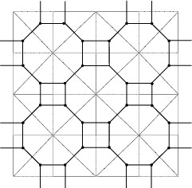
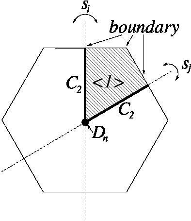
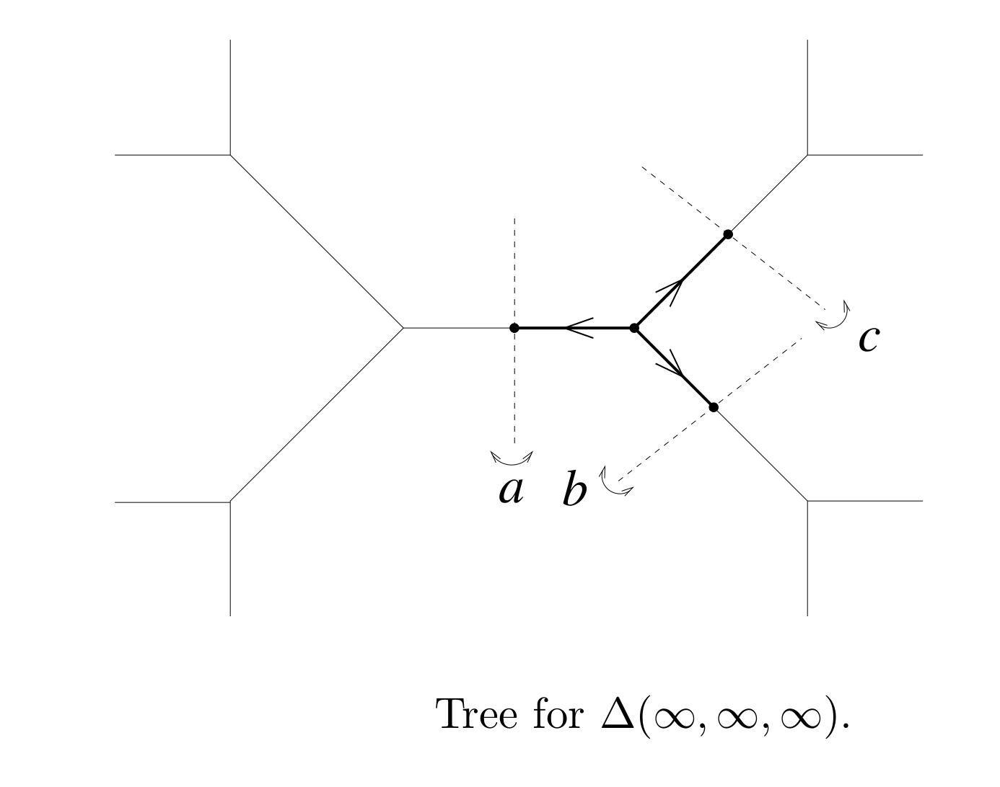
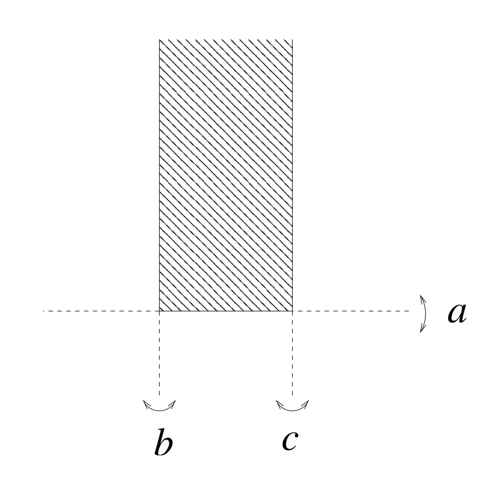

|
|||
|---|---|---|---|
| Davis Complex Sub-package by Alexander D. Rahm and Ruben J. Sanchez-Garcia |
|||
| The
aim of this subpackage is to create a combinatorial model of the Davis
complex of an arbitrary Coxeter group. The Davis complex has been defined in [M.W. Davis, Groups generated by reflections, Ann. Math. 117 (1983)]; and the present sub-package is a release of the implementation described in [R.J. Sanchez-Garcia, Equivariant K-homology for some Coxeter groups, J. London Math. Soc. (2) 75 (2007)]. A Coxeter group is represented by a Coxeter matrix M, with entries the order of the elements s_i s_j in a Coxeter presentation (the generators s_i are of order 2). Since the diagonal elements are one, and it is symmetric, we only need to specify the elements above (or below) the diagonal. |
|||
| The function CreateCoxeterMatrix allows to convert the information of a Coxeter diagram into a Coxeter matrix. For example, consider a Coxeter triangle group, generated by elements s_1, s_2, s_3 of order 2. Let us consider the special case where the order of s_1 s_2 is 2, and the orders of s_1 s_3 and s_2 s_3 are 4: | |||
| gap> M:=
CreateCoxeterMatrix( 3, [2,4,4] ); [ [ 1, 2, 4 ], [ 2, 1, 4 ], [ 4, 4, 1 ] ] |
|||
| This
Coxeter matrix specifies the Coxeter triangle group acting on the
following tessellation:

The sub-package constructs the Davis complex for this group:
|
|||
| gap> C :=
DavisComplex(M); Non-free resolution in characteristic 0 for matrix group with 3 generators. No contracting homotopy available. |
|||
| The
function DavisComplex takes a Coxeter matrix as input, and creates the
Davis complex as a HAP ContractibleGComplex data type. This is a
simplicial complex with one n-simplex for each strictly increasing
chain of spherical subsets of length n+1. A spherical subset is a
subset of the Coxeter generators that generates a spherical (finite)
Coxeter subgroup. The group acts by conjugation on the chains; and for
instance the stabiliser of an n-simplex is the group generated by the
first (or smallest) spherical subgroup in the chain. For more details,
see [M.W. Davis, Groups generated by reflections, Ann. Math.
117 (1983)] or [R.J. Sanchez-Garcia, Equivariant K-homology for
some Coxeter groups, J. London Math. Soc. (2) 75 (2007)].
Then, the core functions of HAP can be applied in order to obtain the group homology of our Coxeter group: |
|||
| gap> q :=
5;; F:= FreeGResolution(C,q); Resolution of length 5 in characteristic 0 for matrix group with 3 generators. No contracting homotopy available. gap> T := TensorWithIntegers(F); Chain complex of length 5 in characteristic 0 . gap> for n in [0..q-1] do Print(Homology(T,n),"\n"); od; [ 0 ] [ 2, 2, 2 ] [ 2, 2, 2 ] [ 2, 2, 2, 2, 4, 4 ] [ 2, 2, 2, 2, 2, 2 ] |
|||
| As
well, the Bredon homology of the Coxeter groups, with respect to the
family of finite subgroups and coefficients in the complex
representation rings (interesting in light of the Baum-Connes
conjecture), can be computed from the Davis complex using the Bredon
homology functions of HAP.
A simpler example is the 3-dihedral group: |
|||
| gap> M:=
CreateCoxeterMatrix( 2, [3] ); [ [ 1, 3 ], [ 3, 1 ] ] |
|||
| The
Coxeter cell for the 3-dihedral group looks like this:

The sub-package constructs the Davis complex for this group:
|
|||
| gap> C :=
DavisComplex(M); Non-free resolution in characteristic 0 for Group( [ [ [ -1, 1 ], [ 0, 1 ] ], [ [ 1, 0 ], [ 1, -1 ] ] ]) . No contracting homotopy available. |
|||
| Then, the core functions of HAP can be applied in order to obtain the group homology of our Coxeter group: | |||
| gap> q :=
5;; F:= FreeGResolution(C,q); Resolution of length 5 in characteristic 0 for Group( [ [ [ -1, 1 ], [ 0, 1 ] ], [ [ 1, 0 ], [ 1, -1 ] ] ]) . No contracting homotopy available. gap> T := TensorWithIntegers(F); Chain complex of length 5 in characteristic 0 . gap> for n in [0..q-1] do Print(Homology(T,n),"\n"); od; [ 0 ] [ 2 ] [ ] [ 6 ] [ ] |
|||
| We can
recover the above result "by hand" by elementary methods of group
homology.
An example where the infinite orders (represented by zeros) appear in the Coxeter matrix, is: |
|||
| gap> M:=
CreateCoxeterMatrix(3,[0,0,0]); [ [ 1, 0, 0 ], [ 0, 1, 0 ], [ 0, 0, 1 ] ] |
|||
| This
Coxeter group acts freely on the infinite trivalent tree (where we set
a := s_1, b := s_2, c := s_3):

The sub-package constructs the Davis complex for this group:
|
|||
| gap> C :=
DavisComplex(M); Non-free resolution in characteristic 0 for matrix group with 3 generators. No contracting homotopy available. |
|||
| Then, the core functions of HAP can be applied in order to obtain the group homology of our Coxeter group: | |||
| gap> q :=
5;; F:= FreeGResolution(C,q); Resolution of length 5 in characteristic 0 for matrix group with 3 generators. No contracting homotopy available. gap> T := TensorWithIntegers(F); Chain complex of length 5 in characteristic 0 . gap> for n in [0..q-1] do Print(Homology(T,n),"\n"); od; [ 0 ] [ 2, 2, 2 ] [ ] [ 2, 2, 2 ] [ ] |
|||
| We conclude with an example where the infinite orders (represented by zeros) mix with finite orders of products in the Coxeter matrix. | |||
| gap> M:=
CreateCoxeterMatrix(3,[2,2,0]); [ [ 1, 2, 2 ], [ 2, 1, 0 ], [ 2, 0, 1 ] ] |
|||
| A
Coxeter cell for this Coxeter group looks as follows (where we set a :=
s_1, b := s_2, c := s_3):

The sub-package constructs the Davis complex for this group:
|
|||
| gap> C :=
DavisComplex(M); Non-free resolution in characteristic 0 for matrix group with 3 generators. No contracting homotopy available. |
|||
| Then, the core functions of HAP can be applied in order to obtain the group homology of our Coxeter group: | |||
| gap> q :=
5;; F:= FreeGResolution(C,q); Resolution of length 5 in characteristic 0 for matrix group with 3 generators. No contracting homotopy available. gap> T := TensorWithIntegers(F); Chain complex of length 5 in characteristic 0 . gap> for n in [0..q-1] do Print(Homology(T,n),"\n"); od; [ 0 ] [ 2, 2, 2 ] [ 2, 2 ] [ 2, 2, 2, 2, 2 ] [ 2, 2, 2, 2 ] |
|||
| More interesting examples can be computed with the present subpackage on the Coxeter tetrahedral groups (with four generators in the Coxeter matrix). This has been carried out as a check for the calculations in [A. Rahm, Accessing the cohomology of discrete groups above their virtual cohomological dimension, Journal of Algebra]. | |||
|